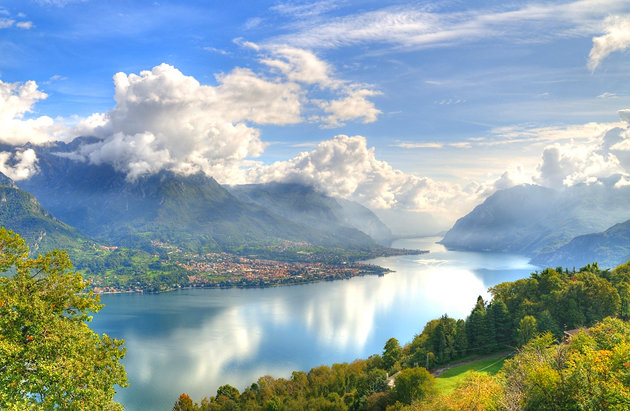

Colosseum
8 DAYS TOUR IN ONLY 730$ WITH HOTEL
Known for:This huge Amphitheater is the largest of its kind ever built by the Roman Empire and has remained a model for sports facilities right up to modern times.
Venice Canals
7 DAYS TOUR IN ONLY 825$ WITH HOTEL
Known for:Venice is a city of islands and the canals have long been, in many ways, the city's streets.
Pompeii
7 DAYS TOUR IN ONLY 875$ WITH HOTEL
Known for: Below the rumbling volcano of Mt Vesuvius stand the ruins of Pompeii, an ancient Roman city preserved in time by the eruption in A.D. 79.
Leaning Tower of Pisa
5 DAYS TOUR IN ONLY 625$ WITH HOTEL
Known for: The Leaning Tower of Pisa is actually just one of many attractions in the city of Pisa, but its fame, gained from its flaw, is world renown.

Lake Como
2 DAYS TOUR IN ONLY 200$ WITH HOTEL
Known for:Lake Como is one of Italy's most scenic areas, surrounded by mountains and lined by small picturesque towns.

Amalfi Coast
2 DAYS TOUR IN ONLY 225$ WITH HOTEL
Known for: The Amalfi Coast, a UNESCO World Heritage Site, is a stunning stretch of coastline along the Sorrentine Peninsula.

Roman Forum
6 DAYS TOUR IN ONLY 715$ WITH HOTEL
Known for:The Roman Forum may require a little imagination to understand exactly what this area once looked like.